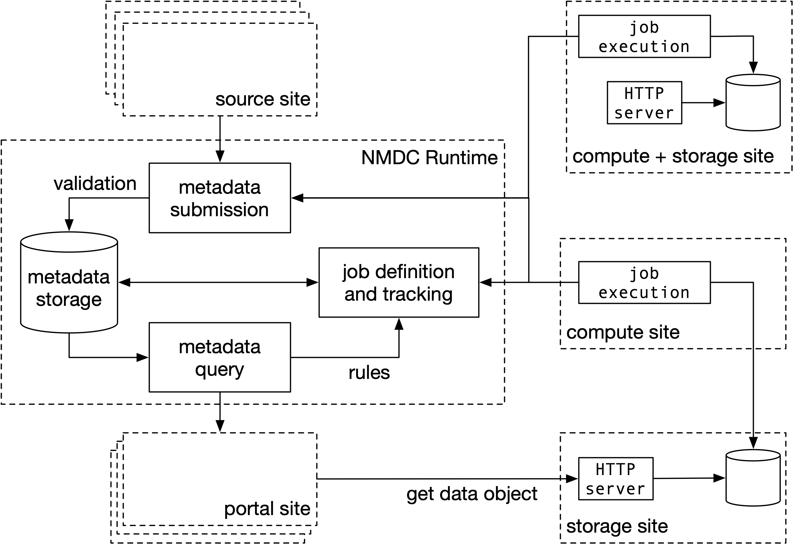

Introduction¶
Welcome to the documentation for the NMDC Runtime.
The documentation uses the Diátaxis framework. Content here is partitioned into:
- Practical steps:
- Learning-oriented tutorials
- Task-oriented how-to guides
- Theoretical knowledge:
- Information-oriented reference
- Understanding-oriented explanation
Explore these using the site navigation.
API Resource Diagram¶
erDiagram
user }|--o{ site : administers
site ||--o{ job-execution : claims
job ||--o{ job-execution : done-via
workflow ||--o{ job : configured-as
site ||--o{ data-object : stewards
nmdc-runtime-site ||--o{ job : creates
job-execution ||--o{ data-object : has-output
job-execution ||--o{ metadata : has-output
nmdc-runtime-site ||--o{ metadata : ingestsThe above entity-relationship diagram shows various resources of the NMDC Runtime API.
A site is a resource, administered by one or more users, that may (1) steward data objects, and (2) claim job executions.
The NMDC Runtime site is a special site that creates the jobs that sites can execute. Workflows serve as the templates for these jobs -- specifically, the Runtime creates a job by associating a workflow with a particular data object as its input.
Thus, each job execution is an application of a workflow to a particular input. The outputs of job executions are data objects and metadata.
In the NMDC Schema, the term data object refers to a metadata record that includes a URL to access a payload, the raw sequence of bytes that the data object identifies. Thus, "sites steward data objects" means that sites ensure that data object metadata is accurate and actionable -- this includes either directly hosting URLs for payloads, or else obtaining URLs from delegated services.
The NMDC Runtime site ingests metadata output by job executions. This ingestion may trigger the creation of new workflow jobs for sites to claim and execute.
Site Federation¶
Below is a figure that illustrates the federated nature of site interaction with the runtime.
